Flomar Game-Museum
Welcome to the National Game Museum! If you love playing games then you have come to the right place. There are more than 100 arcade cabinets, so there's something for everyone. If you are not so fond of games, you are welcome in our cafe, where we serve all kinds of delicious drinks (no alcohol) for young and old.
the museum in short
At the museum, there's all kinds of things to do, from new games to the oldest there is something for everyone. If you want to play the first pacman, it's there too, along with all the variations on the game are released. Our museum is also suitable for school outings or excursions. For parents with children's parties, coffee and tea are ready and waiting in our café.
history
The National Video Game Museum began in 2008 in a garage box in The Hague, where two friends, Hasan Tasdemir and Pascal Rappailles, were collecting their collection of arcade video games. When the garage box became too small, they moved to a shed on an industrial estate, but it was not heated. Therefore, they had to move their collection to a vacant Ministry of Agriculture building. When this building too was completed, the collection was stored in an old showroom for classic cars. Since there was no space there to renovate or play the games, they looked for a suitable space and found it on the Cobaltstraat in Zoetermeer in 2011. Hasan and four friends rented the location and the adventure could grow into a place of their own to pursue their hobby exercise practice. As more and more people wanted to join in, it became clear that the location and the hobby approach were no longer longer sufficient. Hasan decided to develop the concept into a professional company and founded in 2015 Playworks BV. In 2016, Hasan came into contact with Jan Kragt, city marketer of the municipality Zoetermeer, who had the idea of turning the collection into a museum. Together, they set up the National Video Game Museum.
Game
The game you can play on this site is an astroid game. the game was created by a first-year software development. The game is based on an older game and is still fun for all ages. The game works as follows: you control a space ship with W,A,D and you can shoot with shift